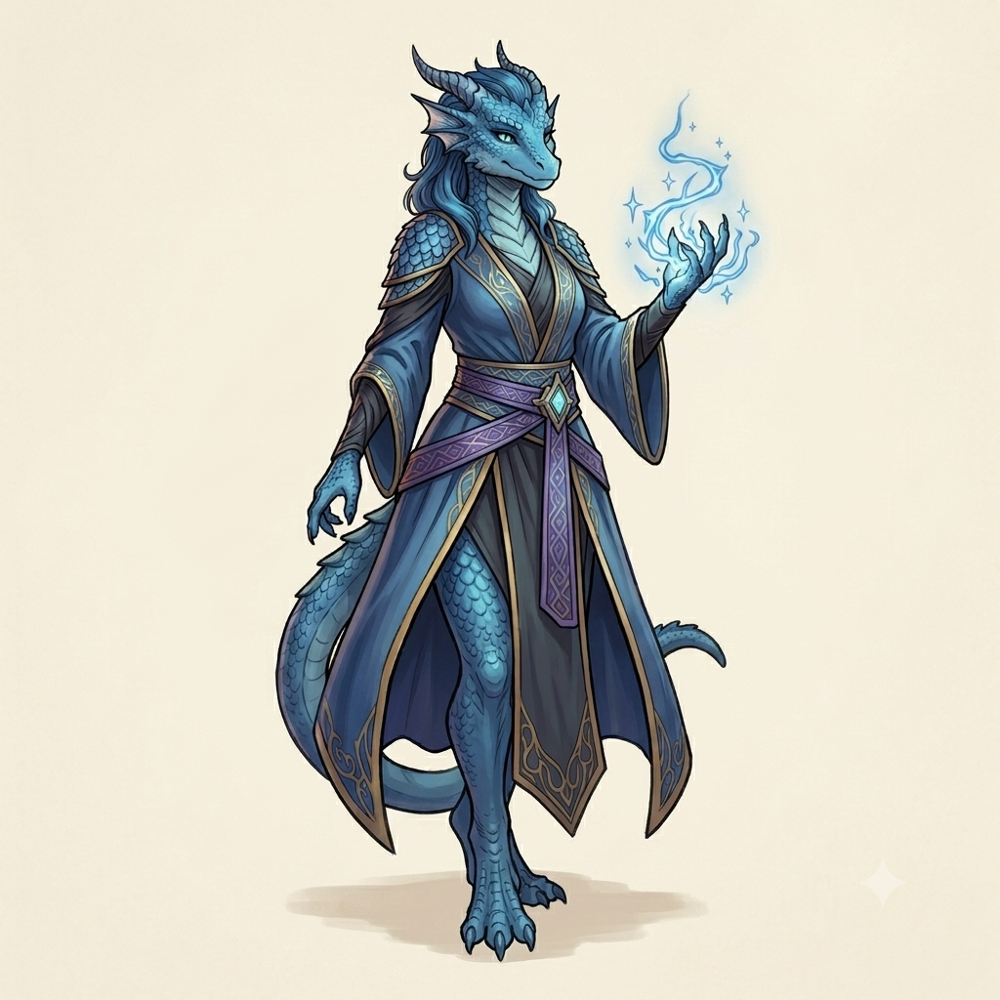
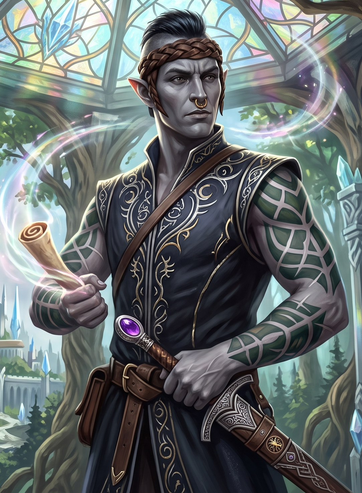
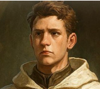

Skye
Race: Dragonborn (blue)
Class: Sorcerer
Gender: Female
Age: 27
Skye is a merchant from Faningor known for her sharp mind, fair dealings, and no-nonsense approach to business. Calm under pressure and quick to spot an opportunity, she prefers practical solutions over grand speeches and values reliability above all else. With trade routes growing uncertain and rumours spreading across the kingdom, she has travelled to the Festival of Bloomtide with a keen eye on the future and little patience for needless complications.

Zylthar Vrokk
Race: High Elf
Class: Barbarian
Gender: Male
Age: 250
A young scion of the esteemed House of Vrokk, Zylthar has earned a reputation for tackling life's challenges with enthusiasm, determination, and very little concern for subtlety. Direct, earnest, and fiercely loyal, he has a habit of taking people at their word and throwing himself wholeheartedly into whatever task lies before him. Though his approach can sometimes leave others scrambling to keep up, his good intentions, courage, and unwavering sense of duty are impossible to doubt.

Alowin Argento
Race: Human
Class: Cleric (Life)
Gender: Male
Age: 24
Alowin is a devoted cleric known for his calm demeanor, compassionate nature, and unwavering commitment to helping others. Thoughtful and patient, he approaches challenges with quiet determination rather than force, placing his faith in perseverance, duty, and the strength of those around him. Though often reserved, he possesses a deep sense of responsibility and can be relied upon when others are in need of guidance, protection, or healing.
Alowin Argento
Race: Human
Class: Arcane Trickster
Gender: Male
Age: Unknown
A skilled locksmith and keen observer, Edric Halver has built a reputation on patience, precision, and discretion. Accustomed to working behind the scenes, he is far more comfortable gathering information than standing in the spotlight. Resourceful and quietly inquisitive, Edric approaches every mystery as a puzzle waiting to be solved, though his curiosity occasionally leads him into situations more complicated than he intended.